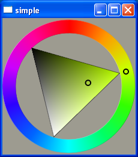

QtColorTriangle Class Reference
The QtColorTriangle class provides a triangular color selection widget. More...
#include <QtColorTriangle>
Inherits QWidget.
Public Functions
- 207 public functions inherited from QWidget
- 12 public functions inherited from QPaintDevice
- 29 public functions inherited from QObject
Signals
Additional Inherited Members
- 57 properties inherited from QWidget
- 1 property inherited from QObject
- 19 public slots inherited from QWidget
- 1 public slot inherited from QObject
- 1 public type inherited from QObject
- 4 static public members inherited from QWidget
- 4 static public members inherited from QObject
- 37 protected functions inherited from QWidget
- 1 protected function inherited from QPaintDevice
- 7 protected functions inherited from QObject
- 1 protected slot inherited from QWidget
- 1 protected type inherited from QPaintDevice
- 2 protected variables inherited from QObject
Detailed Description
The QtColorTriangle class provides a triangular color selection widget.
This widget uses the HSV color model, and is therefore useful for selecting colors by eye.
The triangle in the center of the widget is used for selecting saturation and value, and the surrounding circle is used for selecting hue.
Use setColor() and color() to set and get the current color.

Member Function Documentation
QtColorTriangle::QtColorTriangle ( QWidget * parent = 0 )
Constructs a color triangle widget with the given parent.
QtColorTriangle::~QtColorTriangle ()
Destructs the color triangle.
void QtColorTriangle::colorChanged ( const QColor & color ) [signal]
Whenever the color triangles color changes this signal is emitted with the new color.
int QtColorTriangle::heightForWidth ( int w ) const [virtual]
Forces the triangle widget to always be square. Returns the value w.
Reimplemented from QWidget.
| Copyright © 2009 Nokia Corporation and/or its subsidiary(-ies) |
Trademarks |
Qt Solutions |